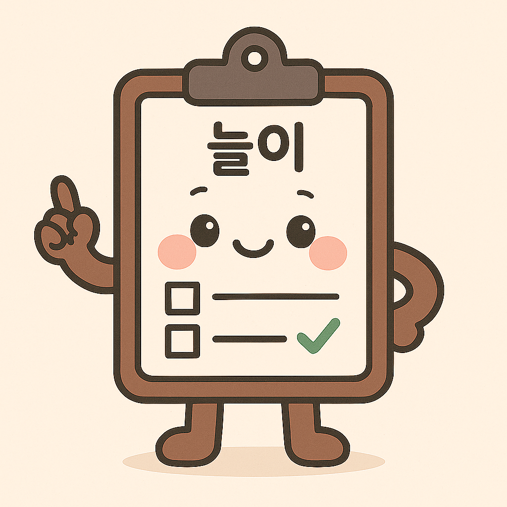
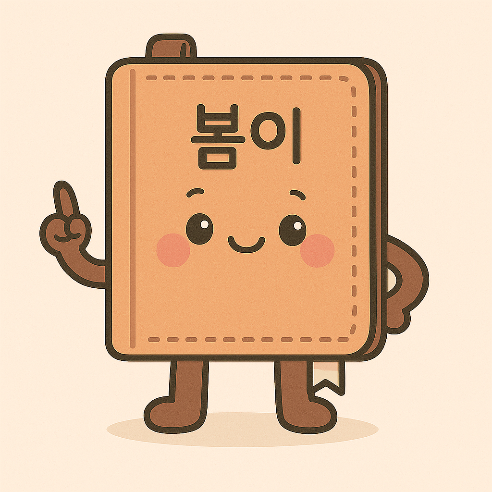
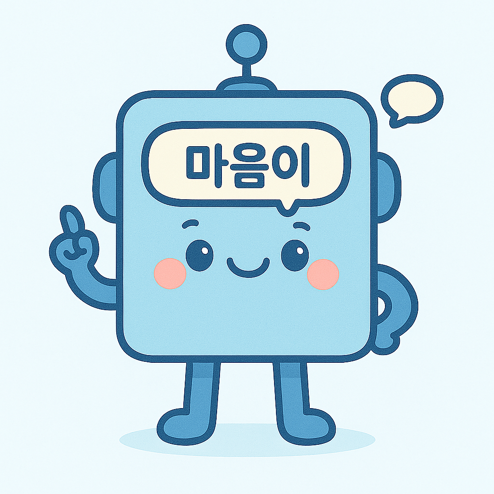

오늘 마음을 살피고,
부드럽게 치유해요 🌿
See your Mind, Heal your Day · 스트레스 진단 · 감정일기 · 공감형 피드백
오늘의 팁
3분 호흡: 4초 들숨 · 4초 멈춤 · 6초 날숨
마음 미션
오늘 한 가지 작은 감사를 적어보세요.
리마인더
오후 9시에 감정일기 알림 보내기

늘이 스트레스 설문조사 (39문항)
0% 완료늘이의 스트레스 예측 결과
아직 결과가 없습니다. 설문을 저장 또는 제출하면 결과가 표시됩니다.

봄이 감정일기
감정 트렌드 📈
내 마음의 변화를 따라 흐르는 감정의 물결을 확인해 보아요
TOP 8 주요 스트레스 요인 🔎
스트레스 요인의 원인과 영향을 확인해 보아요
맞춤 힐링 피드백 💗
호흡 · 언어 · 루틴 · 미션
🌱 오늘은 스스로에게 한마디 친절함을 선물해요.
- 숨쉬기: 4-4-6 호흡 3회
- 긍정적 생각: 오늘 잘한일 한가지 생각하고 말하기
- 긍정적 미션: 10분 산책

마음이 공감봇
안녕하세요, 오늘 마음은 어떠세요? 🌿
조금 불안하고 긴장돼요…
그 느낌을 알아차린 것만으로도 큰 걸음을 내디뎠어요. 지금 여기서 호흡을 같이 해볼까요?